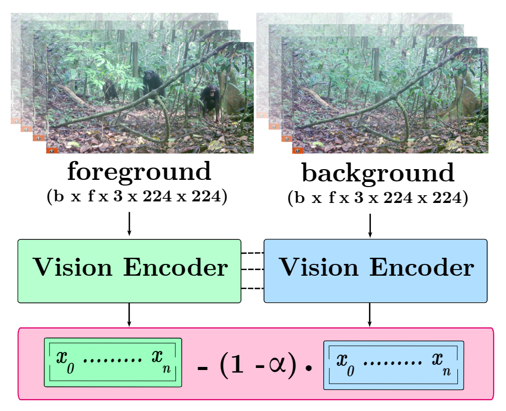

Computer vision analysis of camera trap video footage is essential for wildlife conservation, as captured behaviours offer some of the earliest indicators of changes in population health. Recently, several high-impact animal behaviour datasets and methods have been introduced to encourage their use; however, the role of behaviour-correlated background information and its significant effect on out-of-distribution generalisation remain unexplored.
In response, we present the PanAf-FGBG dataset, featuring 20 hours of wild chimpanzee behaviours, recorded at over 350 individual camera locations. Uniquely, it pairs every video with a chimpanzee (referred to as a foreground video) with a corresponding background video (with no chimpanzee) from the same camera location. We present two views of the dataset: one with overlapping camera locations and one with disjoint locations. This setup enables, for the first time, direct evaluation of in-distribution and out-of-distribution conditions, and for the impact of backgrounds on behaviour recognition models to be quantified.All clips come with rich behavioural annotations and metadata including unique camera IDs and detailed textual scene descriptions.
We present a latent-space normalisation technique that boosts out-of-distribution performance by +5.42% mAP for convolutional and +3.75% mAP for transformer-based models.
We thank the Pan African Programme: ‘The Cultured Chimpanzee’ team and its collaborators for allowing the use of their data for this paper. We thank Amelie Pettrich, Antonio Buzharevski, Eva Martinez Garcia, Ivana Kirchmair, Sebastian Schütte, Linda Gerlach and Fabina Haas. We also thank management and support staff across all sites; specifically Yasmin Moebius, Geoffrey Muhanguzi, Martha Robbins, Henk Eshuis, Sergio Marrocoli and John Hart. Thanks to the team at https://www.chimpandsee.org particularly Briana Harder, Anja Landsmann, Laura K. Lynn, Zuzana Macháčková, Heidi Pfund, Kristeena Sigler and Jane Widness. The work that allowed for the collection of the dataset was funded by the Max Planck Society, Max Planck Society Innovation Fund, and Heinz L. Krekeler. In this respect we would like to thank: Ministre des Eaux et Forêts, Ministère de l’Enseignement supérieur et de la Recherche scientifique in Côte d’Ivoire; Institut Congolais pour la Conservation de la Nature, Ministère de la Recherche Scientifique in Democratic Republic of Congo; Forestry Development Authority in Liberia; Direction Des Eaux Et Forêts, Chasses Et Conservation Des Sols in Senegal; Makerere University Biological Field Station, Uganda National Council for Science and Technology, Uganda Wildlife Authority, National Forestry Authority in Uganda; National Institute for Forestry Development and Protected Area Management, Ministry of Agriculture and Forests, Ministry of Fisheries and Environment in Equatorial Guinea. This work was supported by the UKRI CDT in Interactive AI (grant EP/S022937/1). This work was in part supported by the US National Science Foundation Awards No. 2118240 "HDR Institute: Imageomics: A New Frontier of Biological Information Powered by Knowledge-Guided Machine Learning" and Award No. 2330423 and Natural Sciences and Engineering Research Council of Canada under Award No. 585136 for the “AI and Biodiversity Change (ABC) Global Center”.
@inproceedings{brookes2025fgbg,
author = {Otto Brookes and Maksim Kukushkin and Majid Mirmehdi and Colleen Stephens and Paula Dieguez and Thurston C. Hicks and Sorrel Jones and Kevin Lee and Maureen S. McCarthy and Amelia Meier and Emmanuelle Normand and Erin G. Wessling and Roman M. Wittig and Kevin Langergraber and Klaus Zuberbühler and Lukas Boesch and Thomas Schmid and Mimi Arandjelovic and Hjalmar Kühl and Tilo Burghardt},
title = {PanAfFGBG: Understanding the Impact of Backgrounds in Wildlife Behaviour Recognition},
booktitle = {Proceedings of the IEEE/CVF Conference on Computer Vision and Pattern Recognition (CVPR)},
year = {2025}
}